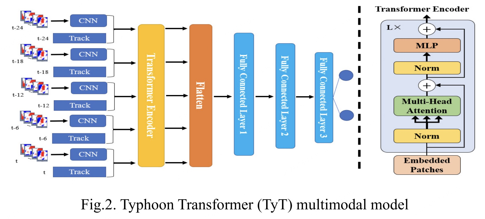
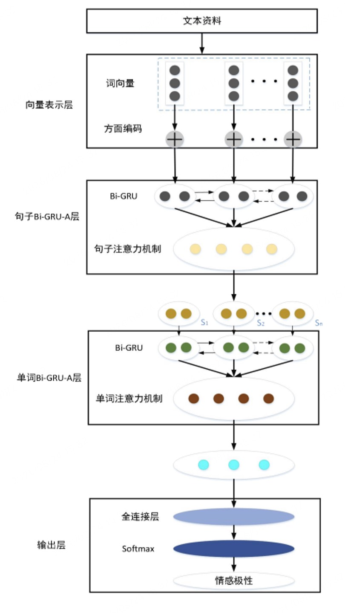
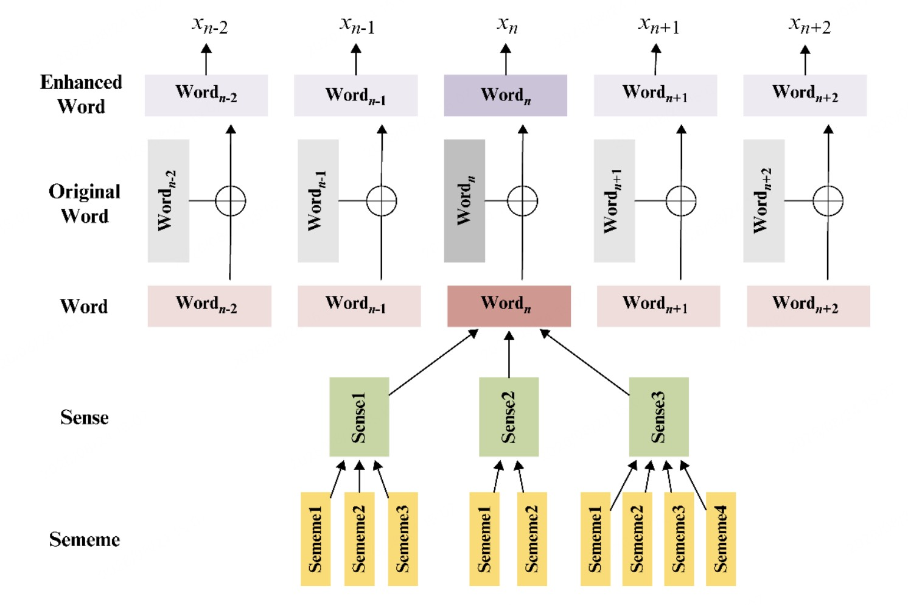
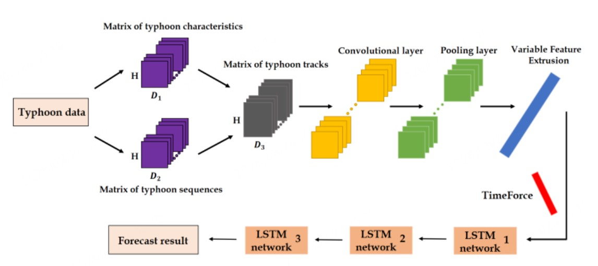
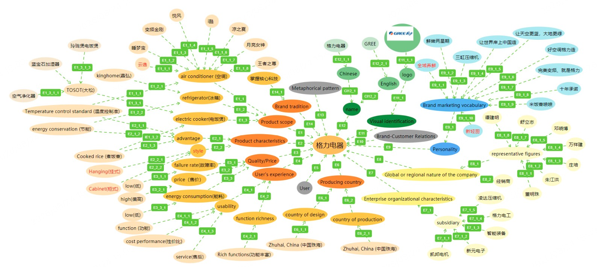

学科绩点
Undergraduate · 2020—2024
以勤为径，
向学而行。
本科阶段，我把“勤能补拙”落实为持续的学习、科研与实践：夯实数据科学基础，也在论文、竞赛与知识产权中验证所学。
满绩课程
学术论文
校内奖项
以学业为先，建立扎实基础
取得 3.7/4.0 的学科绩点，累计 40 余门课程达到满绩，并获得学业奖学金等荣誉。
学以致用，把问题带进实践
将数据科学与人工智能方法用于真实问题，在科研、创新项目和学科竞赛中承担核心工作。
持续产出，形成研究能力
累计发表论文 5 篇，登记软件著作权 3 项、参与发明专利 2 项，并取得多项竞赛成果。
01 · Academic Foundation
学业，是所有探索的底座
成绩不是终点，而是长期投入最直接的记录。课程训练构成了此后进入机器学习研究与工程实践的知识基础。
Transcript加载成绩单 · transcript.jpg
本科成绩单
GPA 3.67 / 4.0（约 3.7）· 40+ 门满绩课程ACADEMIC RECORD
从广度中建立体系，在深度中形成方向。
通过系统的专业课程训练，逐步建立数学、统计、编程与数据建模能力，并将其迁移到科研与创新项目中。
学科绩点3.67 / 4.0
满绩课程40+ 门
学习原则学业为先
02 · Research Output
从课程知识，到五篇论文
围绕数据驱动方法展开研究，在问题定义、实验设计、模型实现与论文写作中逐步形成完整的科研训练。

2023 · Multimodal Forecasting
A Multimodal Deep Learning Approach for Typhoon Track Forecast by Fusing CNN and Transformer Structures ↗
以 CNN 提取多时刻气象场的空间特征，并与历史轨迹共同送入 Transformer 编码器建模长程依赖，最后通过全连接层回归未来台风位置。

2023 · Aspect-level Sentiment
Aspect-level Sentiment Analysis Model Fused with GPT and Multi-layer Attention ↗
融合 GPT 的上下文表征与多层注意力机制，聚焦方面词及其相关情感线索，用于更细粒度的方面级情感判断。

2023 · NLP & Broad Learning
Enhanced Word-unit Broad Learning System with Sememes ↗
通过 Word → Sense → Sememe 的层级知识增强词表示，并结合位置编码与注意力聚合，使宽度学习系统同时学习文本序列信息与词语重要性。

2022 · Time-series Forecasting
Typhoon Track Prediction Based on TimeForce CNN-LSTM Hybrid Model ↗
将台风特征矩阵与轨迹序列矩阵融合，使用 CNN 提取局部模式、TimeForce 动态强化时间影响，再由多层 LSTM 输出轨迹预测结果。

2023 · Knowledge Graph
Chinese Brand Identity Management Based on Never-Ending Learning and Knowledge Graphs ↗
以持续学习方式采集品牌语料，用知识图谱组织产品特征、营销词汇、品牌人格与人物关系，为品牌识别的长期追踪和策略分析提供结构化依据。
03 · Honors & Competition
在竞争中检验能力
以第一负责人身份主报“挑战杯”并获省级三等奖；作为主要成员获得 2 项国家级、2 项省级奖项，并累计获得 16 项校内荣誉。
Core Competition加载证书 · award-01.jpg
第十七届“挑战杯”广东省三等奖
基于 TimeForce CNN-LSTM 混合模型的台风轨迹预测National Competition加载证书 · award-02.jpg
中国国际“互联网+”大学生创新创业大赛铜奖
鹏巢科技 · 无人机快递包裹投递全自动化解决方案National Competition加载证书 · award-03.jpg
中国大学生计算机设计大赛三等奖
人工智能应用 · 人工智能实践赛
Representative Campus Honors
16 项校内荣誉中的三项代表
Campus Honor 01加载证书 · campus-honor-01.jpg
大学生计算机设计大赛一等奖
第三届科技学术节 · 大数据主题赛Campus Honor 02加载证书 · campus-honor-02.jpg
2024 届优秀毕业生
思想品德优良 · 学习成绩优秀 · 综合表现突出Campus Honor 03加载证书 · campus-honor-03.jpg
学术和科技创新奖
2021–2022 学年单项奖学金04 · Intellectual Property
让研究沉淀为可复用成果
除论文与竞赛外，也注重将方法与系统固化为知识产权：以第一作者登记 3 项软件著作权，并作为主要发明人参与 2 项发明专利。
软件著作权 3 ITEMS · FIRST AUTHOR
Software 01加载证书 · software-01.jpg
基于 ResNet 的颜值打分与 OpenCV 美图系统
软件著作权 · 第一作者Software 02加载证书 · software-02.jpg
基于 PyQT5 的台风路径查询软件
软件著作权 · 第一作者Software 03加载证书 · software-03.jpg
基于深度学习算法的害虫定位检测系统
软件著作权 · 第一作者发明专利 2 ITEMS · CORE INVENTOR
Patent 01加载证书 · patent-01.jpg
视频处理算法仿真方法、系统、装置及存储介质
发明专利 · 主要发明人Patent 02加载证书 · patent-02.jpg
一种光纤通导性检验方法及系统
发明专利 · 主要发明人